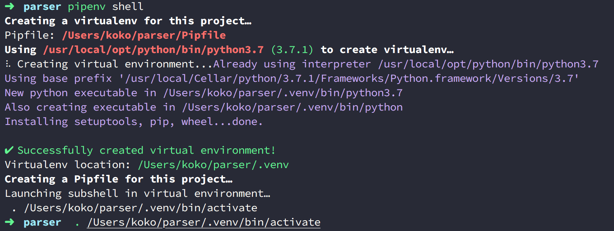
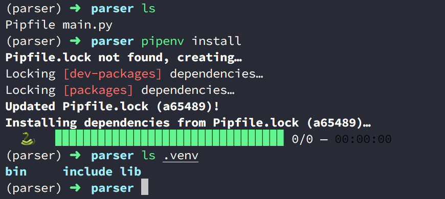

<!DOCTYPE html>
<html lang="en">
<head>
  <meta charset="utf-8" />
  <meta http-equiv="X-UA-Compatible" content="IE=edge" />
  <meta name="HandheldFriendly" content="True" />
  <meta name="viewport" content="width=device-width, initial-scale=1.0" />
    <meta name="robots" content="" />

  <link href="https://fonts.googleapis.com/css?family=Source+Code+Pro|Source+Sans+Pro:300,400,400i,700" rel="stylesheet">

    <link rel="stylesheet" type="text/css" href="https://note.koko.guru/theme/stylesheet/style.min.css">

  <link rel="stylesheet" type="text/css" href="https://note.koko.guru/theme/pygments/github.min.css">
  <link rel="stylesheet" type="text/css" href="https://note.koko.guru/theme/font-awesome/css/fontawesome.css">
  <link rel="stylesheet" type="text/css" href="https://note.koko.guru/theme/font-awesome/css/brands.css">
  <link rel="stylesheet" type="text/css" href="https://note.koko.guru/theme/font-awesome/css/solid.css">

    <link href="https://note.koko.guru/static/custom-style.css" rel="stylesheet">


    <link rel="shortcut icon" href="/static/favicon.ico" type="image/x-icon">
    <link rel="icon" href="/static/favicon.ico" type="image/x-icon">


<meta name="author" content="kokokuo" />
<meta name="description" content="在前一篇 Python - 結合 pip 與 virtualenv 的虛擬環境與套件管理的二合一新利器 Pipenv 中提到透過 Pipenv 建立好的虛擬環境都會放在家目錄下的隱藏路徑統一管理，但是開發時如果使用編輯器像是 VSCode ，則需要一個一個設定以外，如果想要查看檔案也不方，所以能不能夠把建立好的專案虛擬目錄放在自己的專案下呢？答案是可以的，如果你正需要的話可以參考此篇。" />
<meta name="keywords" content="Python, Pipenv">

<meta property="og:site_name" content="koko's Note"/>
<meta property="og:title" content="Python - 透過 .venv 管理 Pipenv 虛擬環境的來源"/>
<meta property="og:description" content="在前一篇 Python - 結合 pip 與 virtualenv 的虛擬環境與套件管理的二合一新利器 Pipenv 中提到透過 Pipenv 建立好的虛擬環境都會放在家目錄下的隱藏路徑統一管理，但是開發時如果使用編輯器像是 VSCode ，則需要一個一個設定以外，如果想要查看檔案也不方，所以能不能夠把建立好的專案虛擬目錄放在自己的專案下呢？答案是可以的，如果你正需要的話可以參考此篇。"/>
<meta property="og:locale" content="en_US"/>
<meta property="og:url" content="https://note.koko.guru/posts/pipenv-use-dot-venv-folder"/>
<meta property="og:type" content="article"/>
<meta property="article:published_time" content="2019-03-11 00:00:00+08:00"/>
<meta property="article:modified_time" content=""/>
<meta property="article:author" content="https://note.koko.guru/author/kokokuo.html">
<meta property="article:section" content="Python"/>
<meta property="article:tag" content="Python"/>
<meta property="article:tag" content="Pipenv"/>
<meta property="og:image" content="/static/koko-logo.png">

  <title>koko's Note &ndash; Python - 透過 .venv 管理 Pipenv 虛擬環境的來源</title>

</head>
<body>
  <aside>
    <div>
      <a href="https://note.koko.guru">
        
      </a>
      <h1><a href="https://note.koko.guru">koko's Note</a></h1>

<p>
Code / Web / Architecture
<br/>
<br/>
你需要非常多的努力
<br/>
才能看起來毫不費力
</p>
<section id=sidebar_tags>
  <dl>
      <dt><a href='https://note.koko.guru/tag/python'>Python (22)</a></dt>
      <dt><a href='https://note.koko.guru/tag/mac'>Mac (17)</a></dt>
      <dt><a href='https://note.koko.guru/tag/pelican'>Pelican (6)</a></dt>
      <dt><a href='https://note.koko.guru/tag/homebrew'>Homebrew (4)</a></dt>
      <dt><a href='https://note.koko.guru/tag/sublime'>Sublime (4)</a></dt>
      <dt><a href='https://note.koko.guru/tag/github'>Github (3)</a></dt>
      <dt><a href='https://note.koko.guru/tag/python3'>Python3 (3)</a></dt>
      <dt><a href='https://note.koko.guru/tag/static-site'>Static Site (3)</a></dt>
      <dt><a href='https://note.koko.guru/tag/pyqt'>PyQt (3)</a></dt>
      <dt><a href='https://note.koko.guru/tag/poetry'>poetry (2)</a></dt>
      <dt><a href='https://note.koko.guru/tag/pyenv'>pyenv (2)</a></dt>
    <dt><a id="tags_mores" href='https://note.koko.guru/tags.html'>...more</a></dt>
  </dl>
</section>

      <nav>
        <ul class="list">

        </ul>
      </nav>

      <ul class="social">
          <li>
            <a  class="sc-github" href="https://github.com/kokokuo" target="_blank">
            <i class="fab fa-github">
            </i>
          </a></li>
          <li>
            <a  class="sc-linkedin" href="https://www.linkedin.com/in/easonkuo" target="_blank">
            <i class="fab fa-linkedin">
            </i>
          </a></li>
      </ul>
    </div>


  </aside>
  <main>

    <nav>
      <a href="https://note.koko.guru">    Home
</a>

      <a href="/pages/about.html">關於我</a>
      <a href="/archives.html">文章列表</a>
      <a href="/pages/software-development.html">軟體開發</a>
      <a href="/pages/financial-investment.html">理財投資</a>


    </nav>

<article class="single">
  <header>
      
    <h1 id="pipenv-use-dot-venv-folder">Python - 透過 .venv 管理 Pipenv 虛擬環境的來源</h1>
    <p>
          Posted on Mon 11 March 2019 in <a href="https://note.koko.guru/category/python.html">Python</a>


    </p>
  </header>


  <div>
    <h1>前言</h1>
<hr>
<p>在前一篇 <a href="https://note.koko.guru/posts/python-pipenv-install-and-usage">Python - 結合 pip 與 virtualenv 的虛擬環境與套件管理的二合一新利器 Pipenv</a> 中提到透過 Pipenv 建立好的虛擬環境都會放在用戶家目錄下的 <code>.local/share/ virtualenvs/</code> 路徑，並且統一管理。</p>
<p>但是如果用編輯器像是 VSCode 開發時，還要設定虛擬目錄的來源很麻煩（因為每個虛擬目錄的命名都不同）所以能不能夠把建立好的專案虛擬目錄放在自己的專案下呢？答案是可以的，如果你正需要的話可以參考此篇。</p>
<h1>建立 <code>.venv</code> 管理你的虛擬環境目錄</h1>
<hr>
<p>作法很簡單，只要在建立虛擬環境前，先在你的專案目錄下建立一個 <code>.venv</code> 的目錄，在照一般建立虛擬環境的方式就好，不管你是用 <code>pipenv install</code>, <code>pipenv shell</code> 或是其他指令讓 Pipenv 偵測沒有虛擬環境而建立都可。</p>
<div class="highlight"><pre><span></span><code>parser/&gt; mkdir .venv
parser/&gt; pipenv shell
</code></pre></div>

<p>如下圖，你會看到虛擬環境被建立在 <code>parser</code> 這個專案下的 <code>.venv</code></p>
<p></p>
<p>因為 <code>pipenv shell</code> 只會建立 <code>Pipfile</code>，所以我們再透過 <code>pipenv install</code> 或是 <code>pipenv lock</code> 建立 <code>Pipfile.lock</code></p>
<p></p>
<p>此時你會虛擬環境的檔案被建置在 <code>.venv</code> 下。</p>
<h1>參考資料</h1>
<hr>
<ol>
<li><a href="https://qiita.com/youkidkk/items/b6a6e39ee3a109001c75">Windows + Python 3.6 + PipEnv + Visual Studio Code でPython 開発環境</a></li>
</ol>
  </div>
  <div class="tag-cloud">
    <p>
      <a href="https://note.koko.guru/tag/python">Python</a>
      <a href="https://note.koko.guru/tag/pipenv">Pipenv</a>
    </p>
  </div>


</article>

    <footer>
<p>&copy; kokokuo 2019</p>
<p>    Powered by <a href="http://getpelican.com" target="_blank">Pelican</a> - <a href="https://github.com/alexandrevicenzi/flex" target="_blank">Flex</a> theme by <a href="http://alexandrevicenzi.com" target="_blank">Alexandre Vicenzi</a>
</p>    </footer>
  </main>


<script type="application/ld+json">
{
  "@context" : "http://schema.org",
  "@type" : "Blog",
  "name": " koko's Note ",
  "url" : "https://note.koko.guru",
  "image": "/static/koko-logo.png",
  "description": ""
}
</script>

</body>
</html>